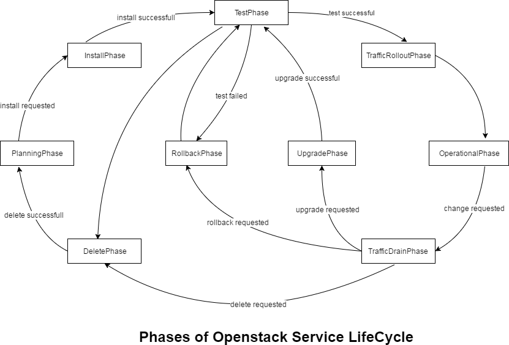
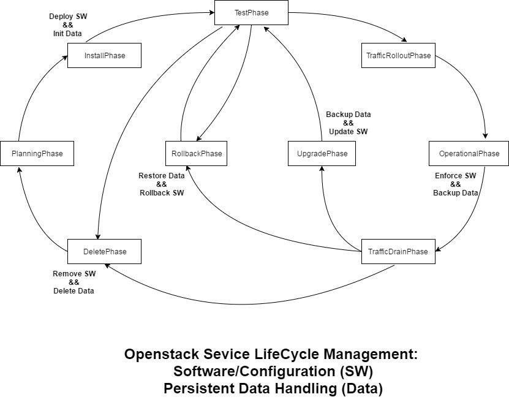

Openstack Service Lifecycle¶
Schema¶
Rationale¶
- Some transitions from one phase/stage to the other are autonomous:
- Start to test if install successful)
- xxx
- Some transitions from one phase/stage to the other but be triggered by Ops.
- For instance, the traffic will not be drained from a site unless Ops needs to perform operations:
- xxx
- Some of the lifecyle can be applied to one slice/shard of the a service. This is what happens during a blue-green update.
- xxx
- xxx
SW & Data Handling¶
Schema¶
Rationale¶
1. In this Kubernetes environment no difference is made between configuration data/configmap and actual software. It is considered readonly. Reverting to a previous version means reverting the docker image and the config map.
2. Data is stateful Data, for instance the content of a database. Part of an update may involve changing a database schema, migrating data. Hence is important to provide backup mechanism in order to be able to perform a rollback.
3. Upgrading may also involved changing number of pod involved into a database cluster. Retriggering the data sharding/replication may require creating dedicated CRDs (for instance etcd…)